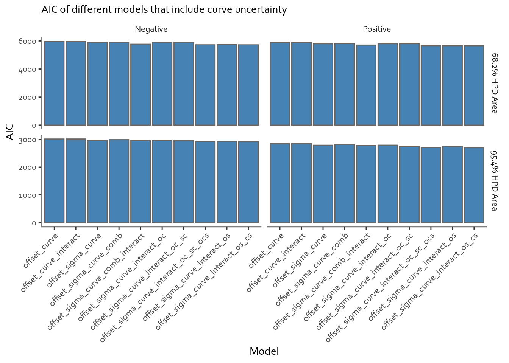
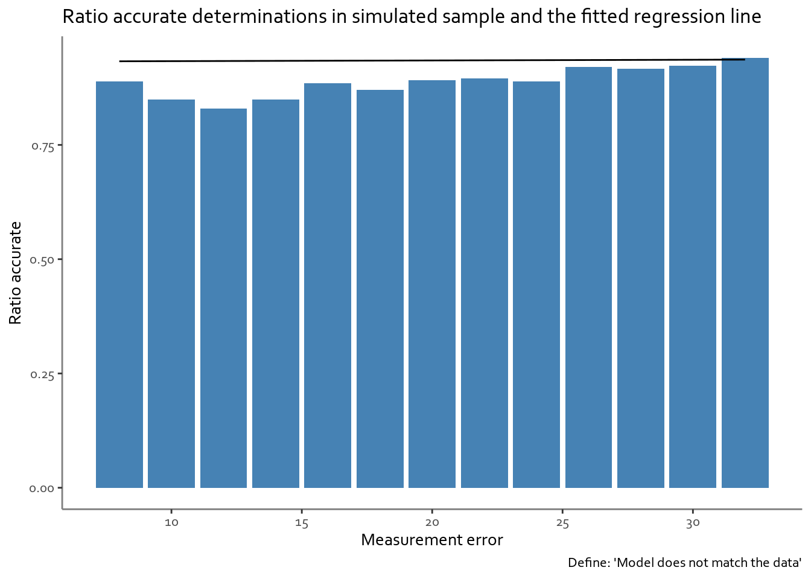

Not enough power for sensitivity: Compromises (weeks 6-10?)
14C Power/Sensitivity
Research Design
Project Log
Author
Pete
Published
August 25, 2023
Hello again! Well, this post was on the slow side in the coming… A few things happened. One of them was that I walked into a Microsoft PL300 run without having touched Power BI beforehand - lets say that it was (at least) a demanding route of advance and I promptly had to limit time on other projects. Of course this coincided with the time when a lot of time was what I needed to push this sensitivity project along. So what happened?
Wandering estimates
When we left off, the aim was to shift the planned approach from one that tried to build different models for different points in time and then using those to predict if the radiocarbon measurements, given a certain offset magnitude, are going to be off-target or not. As an alternative, the plan was to include calibration curve uncertainty and check how it impacts model accuracy.
At first things were coming along nicely. I’ve set up a nice collection of models and had a look at the various model quality metrics.
Code
## Get model diagnostics### Set-up for fifty binsmodel_diags_url <-"https://raw.githubusercontent.com/pete-jacobsson/14C-power-sensitivity/main/model_results/single_cals_curve_uncert_diag.csv"single_cals_curve_uncert_diag <-read_csv(url(model_diags_url))
Code
single_cals_curve_uncert_diag %>%mutate(offset_direction =if_else(is_pos, "Positive", "Negative"),hpd_area =if_else(str_detect(model, "68"), "68.2% HPD Area", "95.4% HPD Area"),model =str_remove_all(model, "_acc\\d{2}") ) %>%ggplot(aes(x = model, y = AIC)) +geom_bar(stat ="identity", fill ="steelblue", color ="grey40") +facet_grid(rows =vars(hpd_area), cols =vars(offset_direction), scales ="free") +labs(x ="Model",subtitle ="AIC of different models that include curve uncertainty" ) +theme_bw() +theme(panel.grid.minor =element_blank(),panel.grid.major =element_blank(),panel.border =element_blank(),axis.line =element_line(colour ="grey50", size =0.5),#legend.position = "none",strip.background =element_rect(color="white", fill="white" ),text =element_text(family ="Corbel"),axis.text.x =element_text(angle =45, vjust =1, hjust=1, size =9) )

Encouraged by the results, I proceeded to check the model fit to the input data. It’s here when things got slow going. As I was using a custom model, inputing the spec into the ggplot smooth function was not going to work. I needed to build a set of my own functions to do the task. It took a little bit of Stack Exchanging to come up with a plan and also the jtools package came in very handy - in particular it contained the function make_predictions(), which can be used to build a set of model predictions, given an input model.
Code
predict_model_results_osc <-function(offset_dir, hpd_area, model_name, variable, variable_range) {##Function to simplify prediction generation##Takes on offset_dir and hpd_area, which simplify the results table,##Takes on variable name as string and variable range as a sequence##Assumes offset dir, hpd_area, and variable name provided are all correct offset_curve_sigma_os <-readRDS("single_cals_curve_uncert_regr.rds") %>%filter(str_detect(model, model_name)) %>%mutate(is_pos =if_else(is_pos, "positive", "negative")) %>%## Change type for filteringfilter(str_detect(is_pos, offset_dir) &str_detect(model, hpd_area)) predicted_results <-make_predictions(offset_curve_sigma_os$model_results[[1]],pred = variable,pred.values = variable_range) predicted_results}# predict_model_results_osc(offset_dir = "pos", hpd_area = "68",# model_name = "offset_curve_interact",# variable = "offset_magnitude", # variable_range = seq(0, 50))plot_simulation_results_osc <-function(range_to_plot, hpd_area, variable, rounding, xlab) {##This function plots the simulation results for the purposes of the results graphing single_cals_curve_uncert_mod <-read_csv(url("https://raw.githubusercontent.com/pete-jacobsson/14C-power-sensitivity/main/single_cals_w_curve_uncert.csv")) %>%mutate(sigma_curve_uncert =sqrt((measurement_error^2) + (curve_uncert^2))) single_cals_curve_uncert_mod %>%rename(variable_to_plot = variable, hpd_to_plot = hpd_area) %>%filter(variable_to_plot >= range_to_plot[1] & variable_to_plot <= range_to_plot) %>%mutate(variable_to_plot = plyr::round_any(variable_to_plot, rounding) ) %>%select(variable_to_plot, hpd_to_plot) %>%group_by(variable_to_plot) %>%summarize(ratio_accurate =mean(hpd_to_plot) ) %>%ggplot(aes(x = variable_to_plot, y = ratio_accurate)) +geom_bar(stat ='identity', fill ="steelblue") +theme_bw() +theme(panel.grid.minor =element_blank(),panel.grid.major =element_blank(),panel.border =element_blank(),axis.line =element_line(colour ="grey50", linewidth =0.5),text =element_text(family ="Corbel")#,#axis.text.x = element_text(angle = 45, vjust = 1, hjust=1, size = 9) ) +labs(y ="Ratio accurate",x = xlab )}# plot_simulation_results_osc(range_to_plot = c(0, 50), hpd_area = "accuracy_68",# variable = "offset_magnitude", rounding = 2,# xlab = "Offset magnitude")plot_model_predictions_ocs <-function(offset_dir, hpd_area, model_name, variable, range, rounding, xlab) {## This function wraps predict_model_results and plot_simulation_results and plots prediction over simulation.## parameters and assumptions as per underpinning functions. plot <-plot_simulation_results_osc(range_to_plot = range, hpd_area = hpd_area,variable = variable, rounding = rounding,xlab = xlab) hpd_for_predict =str_extract(hpd_area, "\\d{2}") ## predict_model_results only takes two-digit numbers as input here (for filtering) - this extracts from HPD area above predicts_tab <-predict_model_results_osc(offset_dir = offset_dir,hpd_area = hpd_for_predict, model_name = model_name,variable = variable, variable_range =seq(range[1], range[2])) predicts_tab <- predicts_tab %>%rename("variable_to_plot"= variable, ratio_accurate =1) ##Dovetail the variable names for the plot at the iteration where interactions start getting explored plot <- plot +geom_line(data = predicts_tab) plot}# plot_model_predictions_ocs(offset_dir = "pos", hpd_area = "accuracy_68",# model_name = "act_oc_sc_acc",# variable = "offset_magnitude",# range = c(0, 50), rounding = 2.5,# xlab = "Offset magnitude")
Quite cheerful I proceeded to plot the results. They came back as pictured on the associated pictures: not matching the model very well. In particular the measurement error estimates seemed to be very far off what they’d need to be to match the data.
Code
oc_sc_plot <-plot_model_predictions_ocs(offset_dir ="neg", hpd_area ="accuracy_95",variable ="measurement_error",model_name ="os_cs",range =c(8, 32), rounding =2,xlab ="Measurement error") +labs(title ="Ratio accurate determinations in simulated sample and the fitted regression line",caption ="Define: 'Model does not match the data'" )

If in doubt: combine!
At this stage I started suspecting that this has something to do with how curve uncertainty estimate affects the model. Long and short, it looked like the models built using both curve uncertainty data and the measurement error data might have been confounding the two effects. I decided to address this by a trick: combining the measurement error and the curve uncertainty into a single parameter. While not a pretty solution, in practice, for most samples, we would have some expectation of age prior to measurement and thus we could make a reasonable guess on the magnitude of curve uncertainty (indeed better than the guess as to what measurement precision the instruments would return). With this data in tow there would thus be the possibility of predicting model accuracy.
This left me with two possible models to take to STAN: one with an interaction between the two parameters, one without such interaction.
The intercepts were comparable within the models, though the model with interactions was giving meaningless predictions if we calculated the values at zero offset and uncertainty (basically plugging the intercept only into the logistic equation).
Which we’ll cover in the next installment… with three weeks of an intensive French course ahead I’ve got no idea when the next installment will be though!